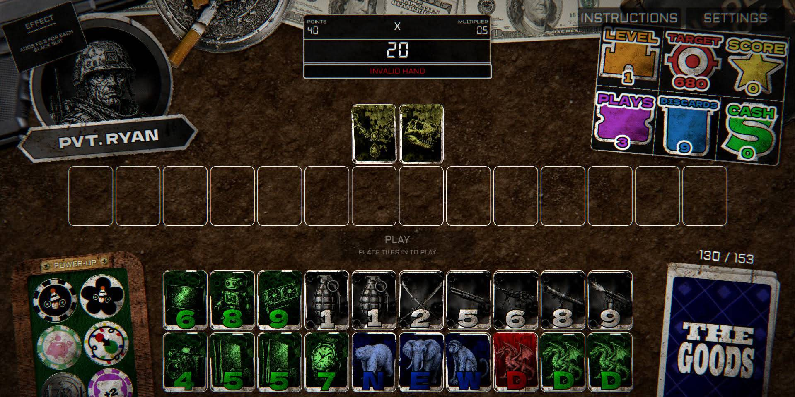
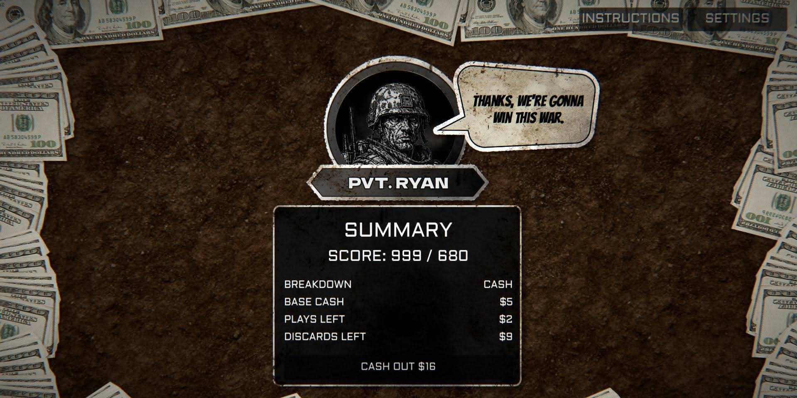

Test across experience levels
Played with six people: three with gaming experience and three older adults without gaming experience.
Making an original card-and-puzzle game immediately learnable through play.
Mad John is an in-progress web game that combines card and puzzle mechanics for casual play during family gatherings and other shared downtime.
I originated the game concept and led the initial execution with AI-assisted coding. I shape the game UX and art direction while collaborating with a developer who implements the game logic. Together we use Godot and GitHub to build and track the work; I am familiar with GitHub’s version-control workflow, including commits, branches, and keeping changes organized across the project.
Played with six people: three with gaming experience and three older adults without gaming experience.
Early feedback showed that the instructions needed more clarity, so I added a hands-on tutorial to teach the interaction in context.
Players were able to understand the core hook and continued playing. The remaining focus is fine-tuning scoring and gameplay balance before release.
The interface keeps the active hand, score target, multiplier, power-ups, and end-of-round breakdown visible while preserving the game’s distinctive visual world.


An ongoing game project with a validated core loop, a clearer onboarding experience, and final gameplay tuning underway before the web release.